library(ggtrace)
library(ggplot2)
packageVersion("ggplot2")
#> [1] '3.5.2'Highjack layer data
Example inspired by a stackoverflow question:
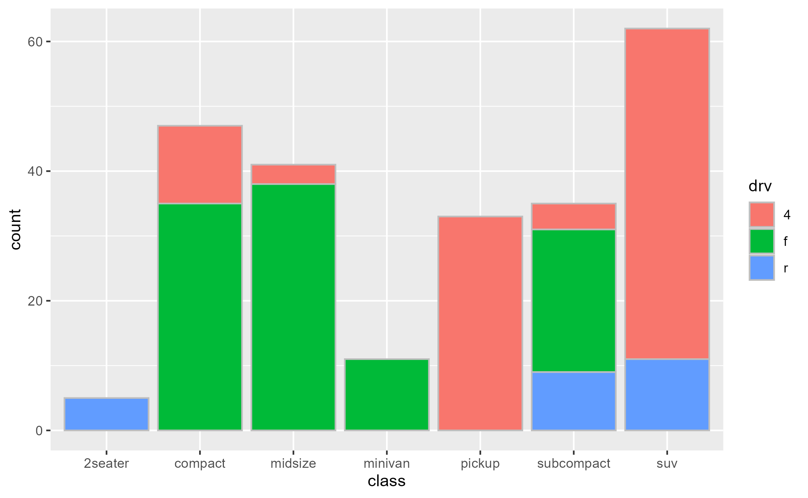
Intercepting the data at draw step to subset bars arbitrarily:
bars_subset <- highjack_args(
x = bars, method = Geom$draw_layer, cond = 1L,
values = expression(
data = data[c(2, 4, 6, 8, 11),]
)
)
bars_subset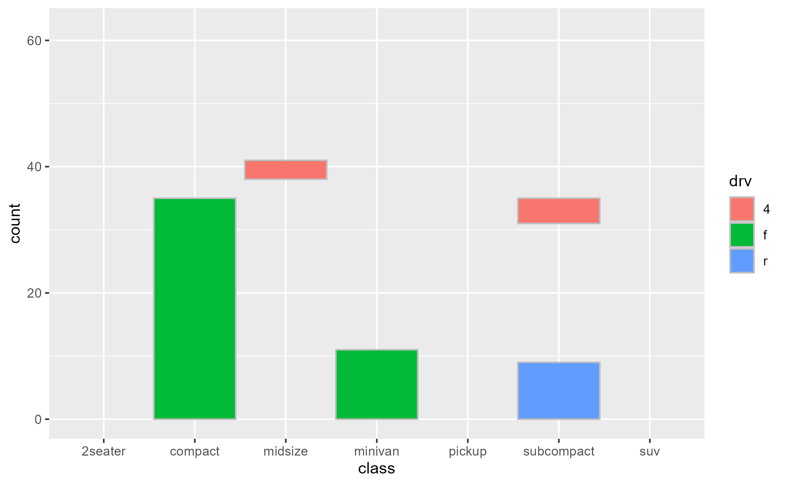
Debug complex aes() expressions
Example adopted from my rstudio::conf 2022 talk
Given a boxplot made with a geom_boxplot() layer,
suppose that we want to add a second layer annotating the value of the
upper whiskers:
box_p <- ggplot(data = mtcars) +
aes(x = factor(cyl), y = mpg) +
geom_boxplot()
box_p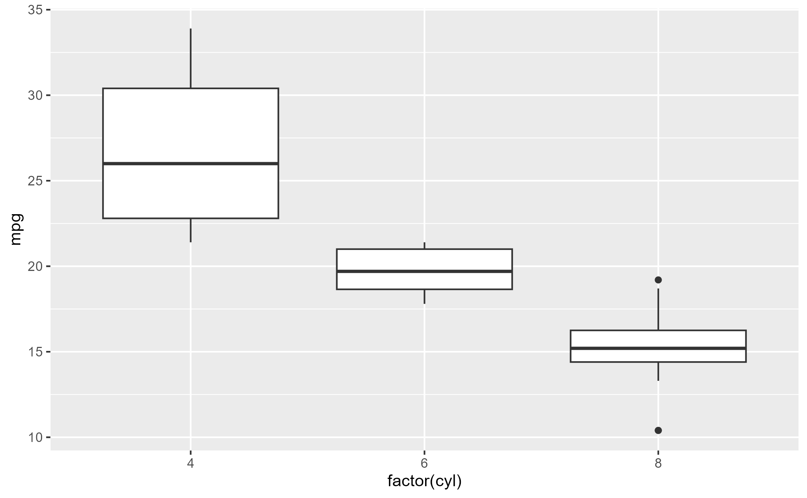
A naive approach would be to add a layer that combines a boxplot stat with a label geom. But this errors out of the box:
box_p +
geom_label(stat = "boxplot")
#> Error in `geom_label()`:
#> ! Problem while setting up geom.
#> ℹ Error occurred in the 2nd layer.
#> Caused by error in `compute_geom_1()`:
#> ! `geom_label()` requires the following missing aesthetics: y and label.The error tells us that the geom is missing some missing aesthetics,
so something must be wrong with the data that the geom
receives. If we inspect this using
layer_before_geom(), we find that the columns for
y and label are indeed missing in the
Before Geom data:
layer_before_geom(last_plot(), i = 2L, error = TRUE, verbose = TRUE)
#> ✔ Ran `inspect_args(last_plot(), ggplot2:::Layer$compute_geom_1, layer_is(2L), error = TRUE)$data`
#> # A tibble: 3 × 14
#> ymin lower middle upper ymax outliers notchupper notchlower x width
#> <dbl> <dbl> <dbl> <dbl> <dbl> <list> <dbl> <dbl> <dbl> <dbl>
#> 1 21.4 22.8 26 30.4 33.9 <dbl [0]> 29.6 22.4 1 0.75
#> 2 17.8 18.6 19.7 21 21.4 <dbl [0]> 21.1 18.3 2 0.75
#> 3 13.3 14.4 15.2 16.2 18.7 <dbl [3]> 16.0 14.4 3 0.75
#> # ℹ 4 more variables: relvarwidth <dbl>, flipped_aes <lgl>, PANEL <fct>,
#> # group <int>Note that you can more conveniently call
last_layer_errorcontext() to the same effect:
last_layer_errorcontext()
#> ✔ Ran `inspect_args(last_plot(), ggplot2:::Layer$compute_geom_1, layer_is(2L), error = TRUE)$data`
#> # A tibble: 3 × 14
#> ymin lower middle upper ymax outliers notchupper notchlower x width
#> <dbl> <dbl> <dbl> <dbl> <dbl> <list> <dbl> <dbl> <dbl> <dbl>
#> 1 21.4 22.8 26 30.4 33.9 <dbl [0]> 29.6 22.4 1 0.75
#> 2 17.8 18.6 19.7 21 21.4 <dbl [0]> 21.1 18.3 2 0.75
#> 3 13.3 14.4 15.2 16.2 18.7 <dbl [3]> 16.0 14.4 3 0.75
#> # ℹ 4 more variables: relvarwidth <dbl>, flipped_aes <lgl>, PANEL <fct>,
#> # group <int>Thus, we need to ensure that y exists to satisfy both
the stat and the geom, and that label exists after the
statistical transformation step but before the geom sees the data.
Crucially, we use the computed variable ymax to (re-)map to
the y and label aesthetics.
box_p +
geom_label(
aes(y = stage(mpg, after_stat = ymax),
label = after_stat(ymax)),
stat = "boxplot"
)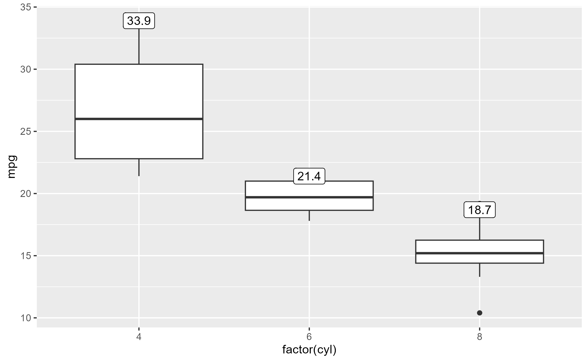
Inspecting the after-stat snapshot of the successful plot above, we
see that both y and label are now present at
this stage to later satisfy the geom.
layer_before_geom(last_plot(), i = 2L)[, c("y", "ymax", "label")]
#> # A tibble: 3 × 3
#> y ymax label
#> <dbl> <dbl> <dbl>
#> 1 33.9 33.9 33.9
#> 2 21.4 21.4 21.4
#> 3 18.7 18.7 18.7Inspect sub-layer data
Example adopted from Demystifying delayed aesthetic evaluation
A bar plot of counts with geom_bar() with
stat = "count" default:
State of bar layer’s data after the statistical transformation step:
layer_after_stat(bar_plot, verbose = TRUE)
#> ✔ Ran `inspect_return(bar_plot, ggplot2:::Layer$compute_statistic, layer_is(1L))`
#> # A tibble: 7 × 8
#> count prop x width flipped_aes fill PANEL group
#> <dbl> <dbl> <mppd_dsc> <dbl> <lgl> <chr> <fct> <int>
#> 1 5 1 1 0.9 FALSE 2seater 1 1
#> 2 47 1 2 0.9 FALSE compact 1 2
#> 3 41 1 3 0.9 FALSE midsize 1 3
#> 4 11 1 4 0.9 FALSE minivan 1 4
#> 5 33 1 5 0.9 FALSE pickup 1 5
#> 6 35 1 6 0.9 FALSE subcompact 1 6
#> 7 62 1 7 0.9 FALSE suv 1 7We can map aesthetics to variables from the after-stat data using
after_stat():
bar_plot +
geom_text(
aes(label = after_stat(count)),
stat = "count",
position = position_nudge(y = 1), vjust = 0
)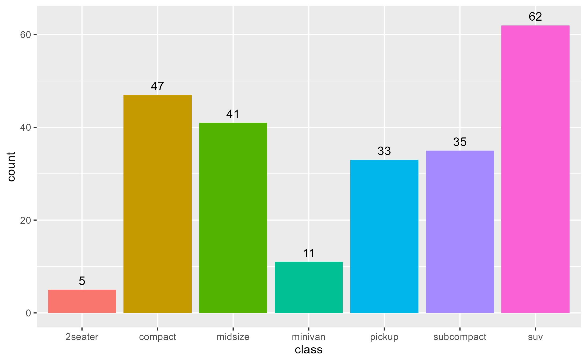
Not just ggproto methods
Example adopted from Github issue #97
The method argument of workflow functions can be
(almost) any function-like object called during the rendering of a
ggplot.
set.seed(2023)
# Example from `?stat_summary`
summary_plot <- ggplot(mtcars, aes(mpg, factor(cyl))) +
geom_point() +
stat_summary(fun.data = "mean_cl_boot", colour = "red", linewidth = 2, size = 3)
summary_plot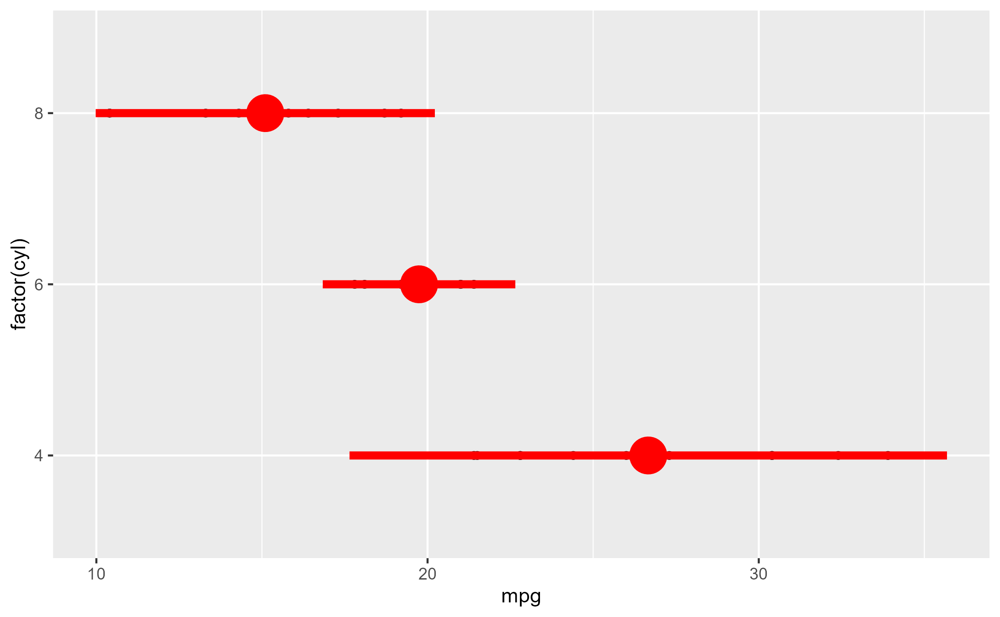
inspect_args(x = summary_plot, method = mean_cl_boot)
#> $x
#> [1] 22.8 24.4 22.8 32.4 30.4 33.9 21.5 27.3 26.0 30.4 21.4
inspect_return(x = summary_plot, method = mean_cl_boot)
#> y ymin ymax
#> 1 26.66364 24.11727 29.19159
highjack_return(
x = summary_plot, method = mean_cl_boot,
value = quote({
data.frame(y = 50, ymin = 25, ymax = 75)
})
)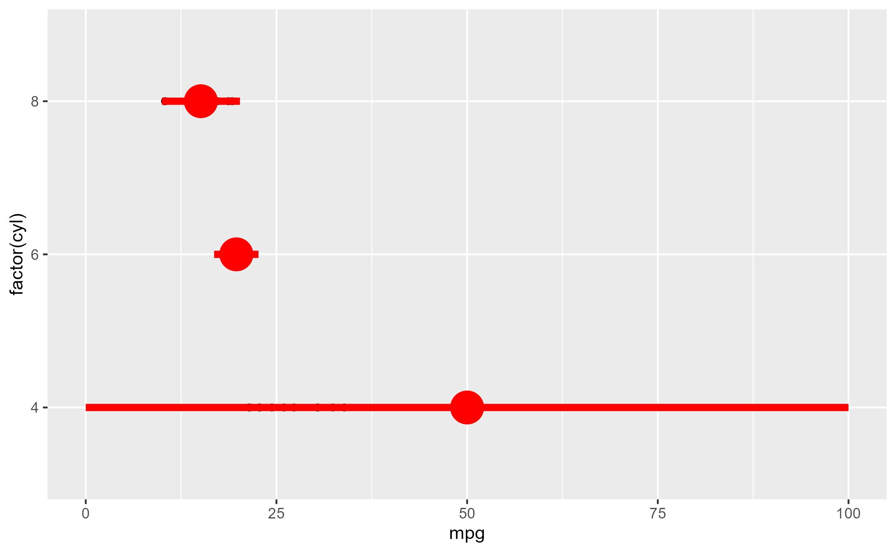
Intervene with surgical precision
Example adopted from a twitter thread
Here’s a plot in polar coordinates:
polar_plot <- ggplot(mtcars, aes(hp, mpg)) +
geom_point() +
geom_smooth(method = "lm", formula = y ~ x) +
expand_limits(y = c(0, 60)) +
coord_polar(start = 0, theta = "y")
polar_plot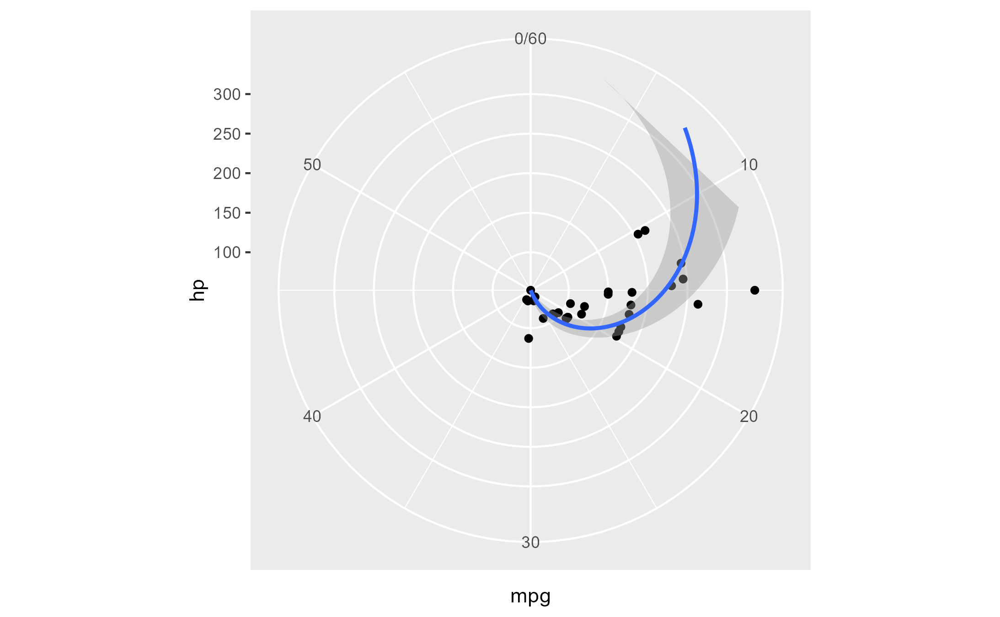
We can clip the plot panel by highjacking the
Layout$render() method using the generic workflow function
with_ggtrace():
with_ggtrace(
x = polar_plot + theme(aspect.ratio = 1/.48),
method = Layout$render,
trace_steps = 5L,
trace_expr = quote({
panels[[1]] <- editGrob(panels[[1]], vp = viewport(xscale = c(.48, 1)))
}),
out = "g"
)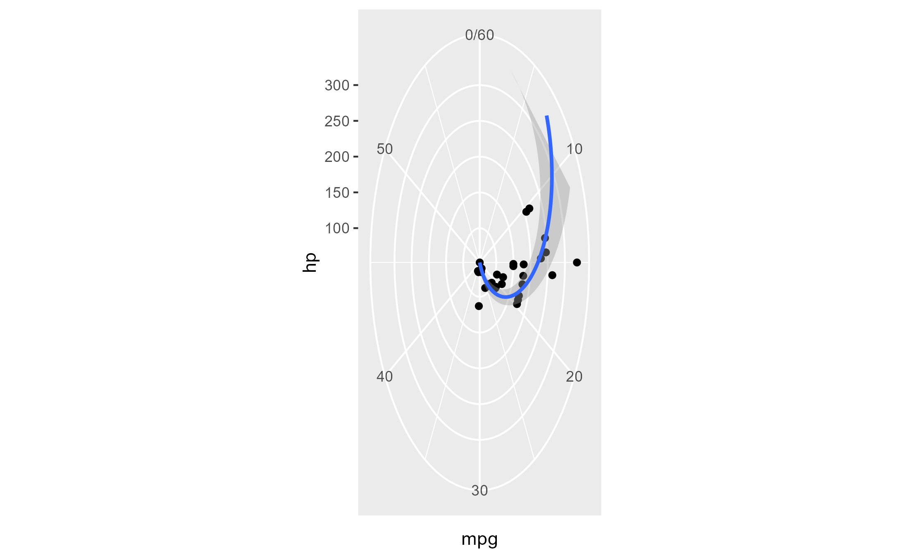
See implementation in MSBMisc::crop_coord_polar().
Highjack the drawing context
Example adopted from my useR! 2022 talk:
library(palmerpenguins)
flashy_plot <- na.omit(palmerpenguins::penguins) |>
ggplot(aes(x = species, y = flipper_length_mm)) +
geom_boxplot(aes(fill = species), width = .7) +
facet_wrap(~ year)
flashy_plot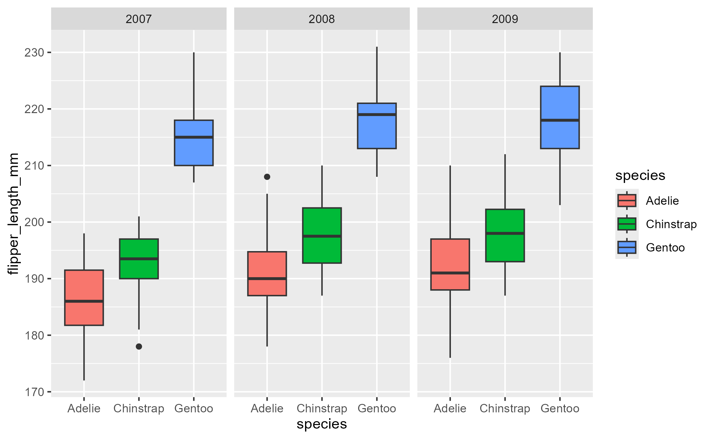
highjack_return(
flashy_plot, Geom$draw_panel, cond = TRUE,
value = quote({
circ <- circleGrob(y = .25 * ._counter_)
grobTree( editGrob(circ, gp = gpar(fill = linearGradient())),
editGrob(returnValue(), vp = viewport(clip = circ)) )
}))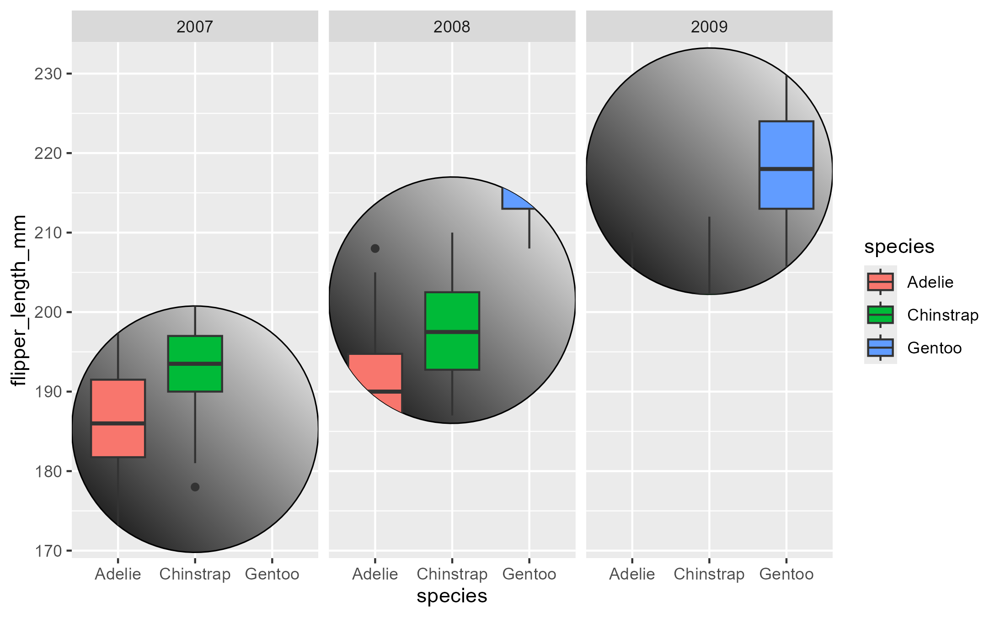
Note the use of the special variable ._counter_, which
increments every time a function/method has been called. See the tracing
context topic for more details.